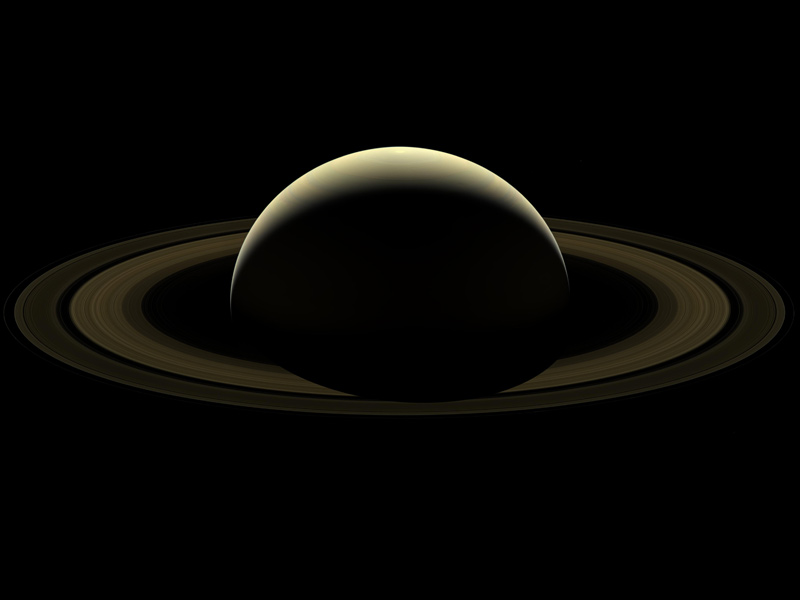
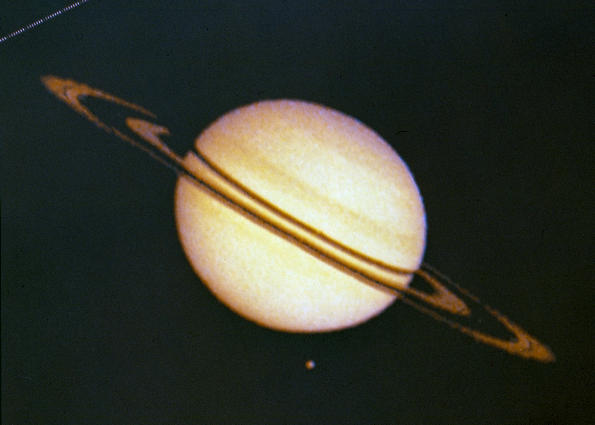

Namesake:
Saturn has long been known as the planet closest to Earth that was first observed by the naked eye. The name of the planet honors the paternal Roman deity of agriculture and wealth who was also known as Jupiter.
Potential for life:
The atmosphere of Saturn is inhospitable to life as we know it. Most likely, creatures cannot adapt to the severe and volatile temperatures, pressures, and materials that make up this planet.
While the planet Saturn is not a plausible environment for life to exist, this is not always the case for all of its several moons. Life might be able to exist on satellites with interior oceans like Titan and Enceladus.

Size and distance:
Saturn is nine times wider than Earth, with a radius of 36,183.7 miles (58,232 kilometers). Saturn would be roughly the size of a volleyball if Earth were the size of a nickel. Saturn is 9.5 astronomical units from the Sun, about 886 million miles (1.4 billion kilometers), on average. The distance between the Sun and Earth is one astronomical unit, or AU. From here, sunlight takes 80 minutes to reach Saturn from the Sun.
Orbit and Rotation:
The second-shortest day in the solar system is on Saturn. The duration of a day on Saturn is only 10.7 hours, and it completes one orbit of the Sun (equivalent to one year in Saturnian time) in roughly 29.4 Earth years (10,756 Earth days).
Similar to Earth's 23.5-degree tilt, its axis is slanted by 26.73 degrees with regard to its orbit around the Sun. This implies that Saturn has seasons just like Earth does.
Moons:
There are countless fascinating and unusual worlds on Saturn. Each of Saturn's moons offers a unique perspective on the Saturn system, from the hazy surface of Titan to the crater-filled Phoebe. 83 moons orbit Saturn. Another 20 moons are pending confirmation of finding and official naming by the International Astronomical Union (IAU), bringing the total number of confirmed and named moons to 63.
Rings:
It is believed that the fragments of comets, asteroids, or shattered moons that broke apart before they reached Saturn and were blasted apart by the planet's strong gravity make up Saturn's rings. They are composed of countless quantities of tiny pieces of rock and ice that have been dusted with other substances. The majority of the ring debris is made up of dust-sized ice grains and pieces the size of houses. Some of the particles are the size of mountains. From Saturn's cloud tops, the rings would appear mostly white, and interestingly, each ring orbits the planet at a distinct speed.
The vertical height of Saturn's rings is normally around 30 feet (10 meters), despite their distance from the planet reaching up to 175,000 miles (282,000 kilometers).

Formation:
Around 4.5 billion years ago, as the rest of the solar system was forming, gravity drew spinning gas and dust in to form Saturn, a gas giant. Saturn moved into its current location in the outer solar system, where it is the sixth planet from the Sun, some 4 billion years ago. Similar to Jupiter, Saturn is primarily composed of the same elements that make up the Sun: hydrogen and helium.
Structure:
Saturn is primarily composed of hydrogen and helium, similar to Jupiter. The dense core of iron and nickel that makes up Saturn's core is encircled by rocky material and other substances that have been hardened by extreme pressure and heat. It is surrounded by a layer of liquid metallic hydrogen, which is smaller than Jupiter's core but yet identical to it.
Saturn is the only planet in our solar system with an average density that is lower than water, which is difficult to comprehend. If there were such a gigantic object as a bathtub, the enormous gas planet could float in it.
Surface:
Saturn is a gas giant, hence it lacks a true surface. Deeper inside the earth, there are largely churning gases and liquids. On Saturn, a spaceship would not only be unable to land, but also unable to pass through unharmed. Any spacecraft attempting to fly inside the planet would be crushed, melted, or vaporized due to the tremendous pressures and temperatures deep inside the planet.
Atmosphere:
Storms, jet streams, and clouds that resemble thin stripes cover Saturn. There are numerous hues of gray, brown, and yellow on the world.
In the equatorial region, winds in the high atmosphere can exceed 1,600 feet per second (500 meters per second). The highest speed of hurricane-force winds, in contrast, is only around 360 feet per second (110 meters per second). Additionally, the pressure, which is similar to that experienced when diving deep underwater, is so intense that it turns gas into liquid.
A six-sided jet stream is an intriguing atmospheric structure on Saturn's north pole. Images from the Voyager I spacecraft originally revealed this hexagonal pattern, which has now been more extensively scrutinized by the Cassini mission. around 20,000 kilometers long
Magnetosphere :
Despite being weaker than Jupiter's, Saturn still has a magnetic field that is 578 times stronger than Earth's. In the vast magnetosphere surrounding Saturn, which includes Saturn, the rings, and several of its satellites, the behavior of electrically charged particles is governed more by Saturn's magnetic field than by the solar wind.
Charged particles that spiral into a planet's atmosphere along magnetic field lines produce aurorae. These electric ions arrive at Earth via the solar wind. At least part of Saturn's aurorae are similar to Jupiter's and are mostly unaffected by the solar wind, as demonstrated by Cassini. Instead, particles blasted from Saturn's moons and the quick rotation of Saturn's magnetic field are what are responsible for these aurorae. However, not all of these "non-solar-originating" aurorae are entirely